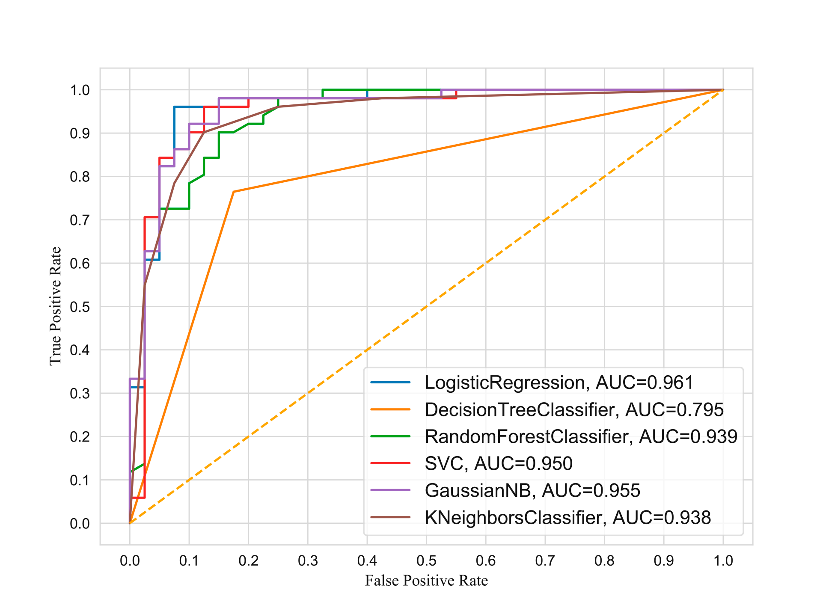

<div class="container">
                <div class="row mh-portfolio-modal-inner">
                    <div class="col-sm-5">
                        <h2>Heart Disease Prediction</h2>
                        <p>Heart disease analysis Using different model and visualize.
                            In the dataset we have some patient clinical report, We have to predict they have heart
                            disease or not?
                        <ul type="disc">
                            <li>Algorithms</li>
                            <li>- Logistic Regression</li>
                            <li>- Decision Tree Classifier</li>
                            <li>- Random Forest Classifier</li>
                            <li>- Support Vector Classifier</li>
                            <li>- Gaussian NB</li>
                            <li>- K Neighbors Classifier</li>
                        </ul>

                        </p>
                        <div class="mh-about-tag">
                            <ul>
                                <li><span>Python</span></li>
                                <li><span>Matplotlib</span></li>
                                <li><span>Scikit-learn</span></li>
                            </ul>
                        </div>
                        <a href="https://github.com/niloy-biswas/Heart-Disease-Analysis" target="_blank"
                            rel="noopener noreferrer" class="btn btn-fill">Source: Github <span class="icon-external-link" aria-hidden="true"></span></a>
                        <a href="https://www.hindawi.com/journals/bmri/2023/6864343/" target="_blank"
                            rel="noopener noreferrer" class="btn btn-fill">Published Article <span class="icon-external-link" aria-hidden="true"></span></a>
                    </div>
                    <div class="col-sm-7">
                        <div class="mh-portfolio-modal-img">
                            
                            <p>Prediction Results of different algorithms.</p>

                        </div>
                    </div>
                </div>
            </div>
